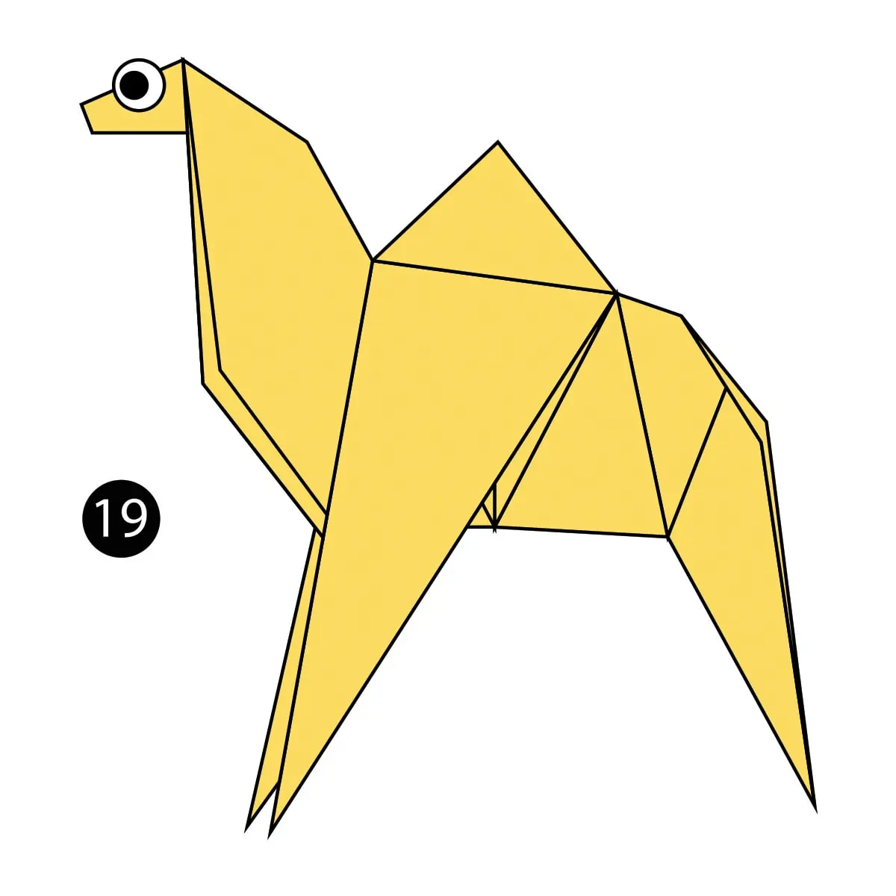
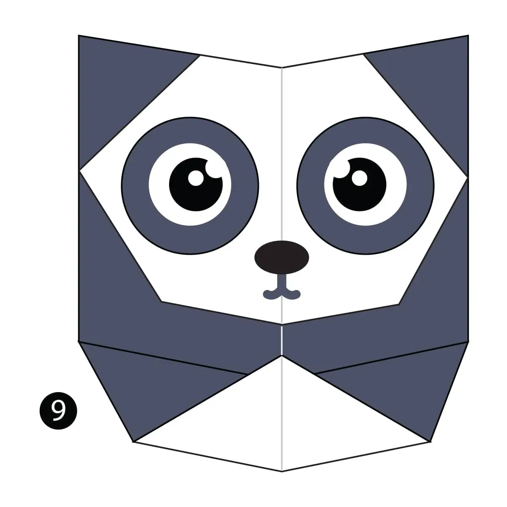
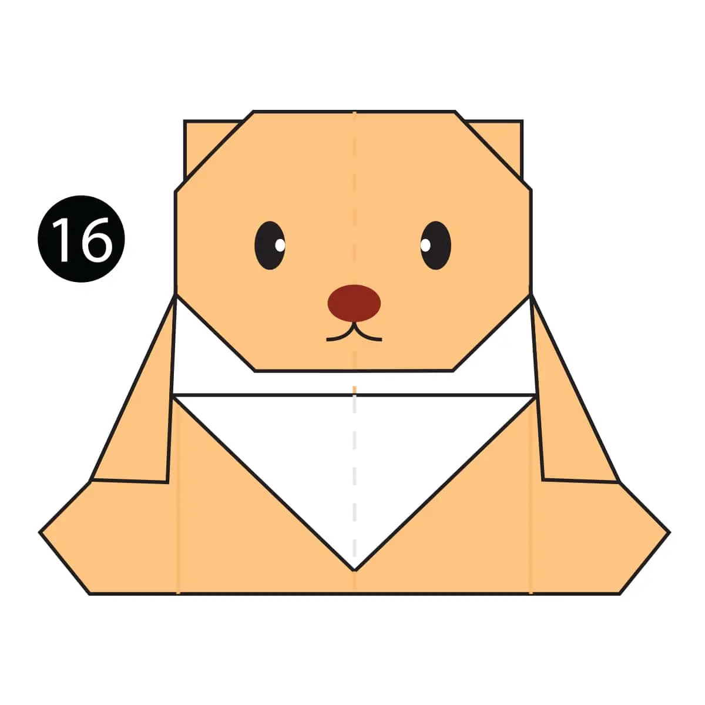
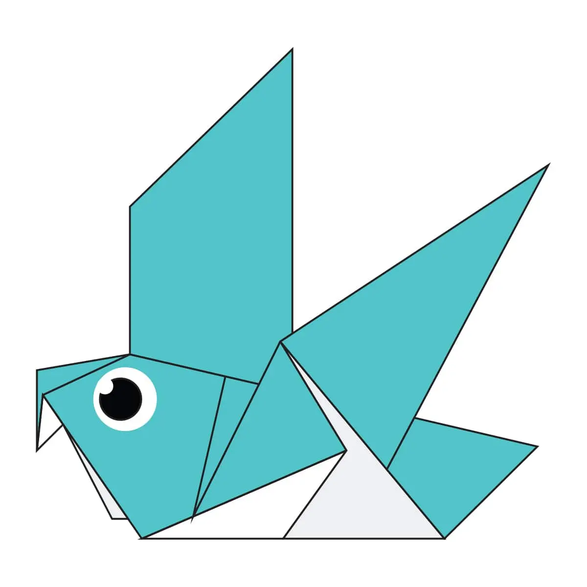
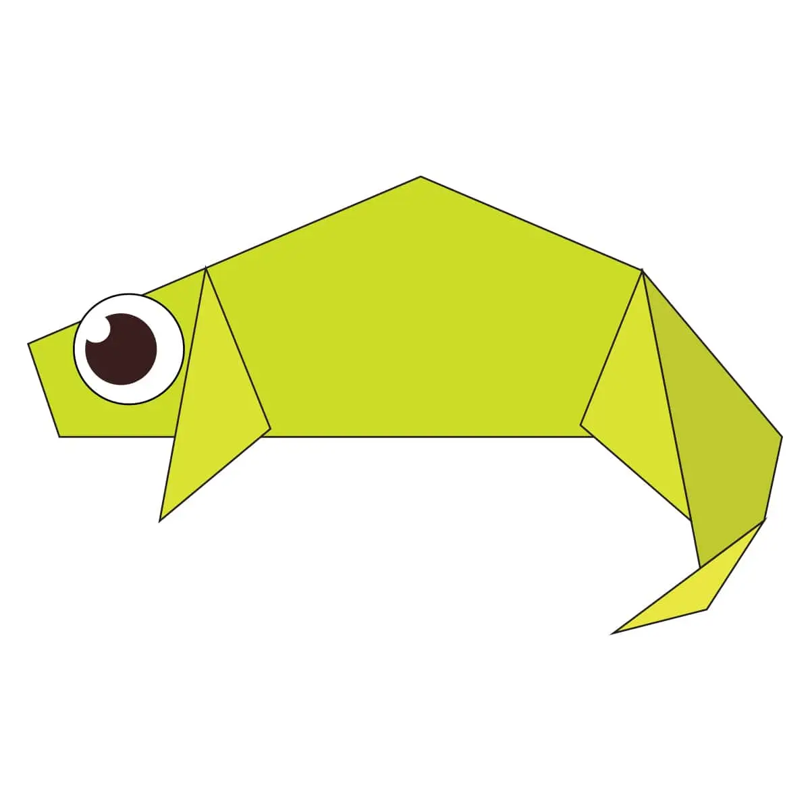
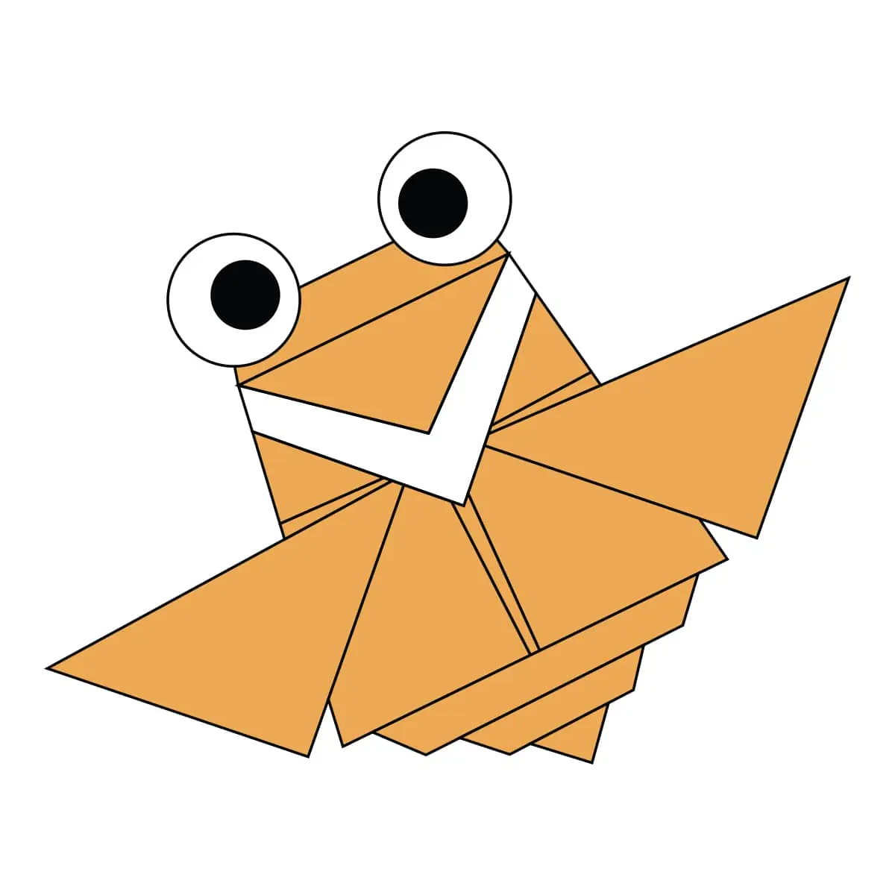

Origami Designs
Fun Facts About Animals

How to make a camel
- Camels are domestic animals
- Camels can go without water for 7 months
- Camels live in hot locations

How to make a panda
- Pandas eat bamboo
- Pandas are endangered animals
- Pandas have black and white fur

How to make a teddy
- Teddy Bears are very fluffy
- Tteddy Bears come in many colors
- Many children own a teddy bear

How to make a pigeon
- Pigeons are incredibly complex and intelligent animals
- Pigeons are renowned for their outstanding navigational abilities
- Pigeons are highly sociable animals

How to make a chameleon
- Almost half of all known species live in Madagascar
- Chameleons vary wildly in terms of size
- Chameleon skin crystals enable them to change color at will

How to make a Flying Cicada
- Cicadas can survive a huge fall as babies
- Females may be attracted to the sound of motors
- Most have red-orange eyes